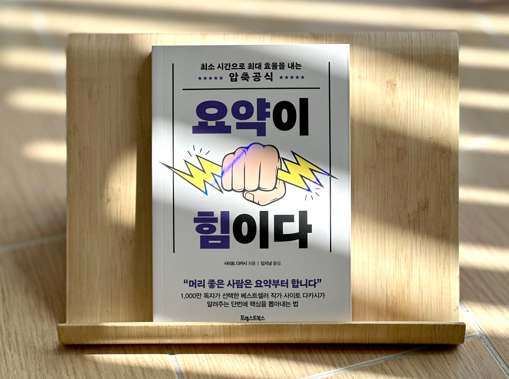
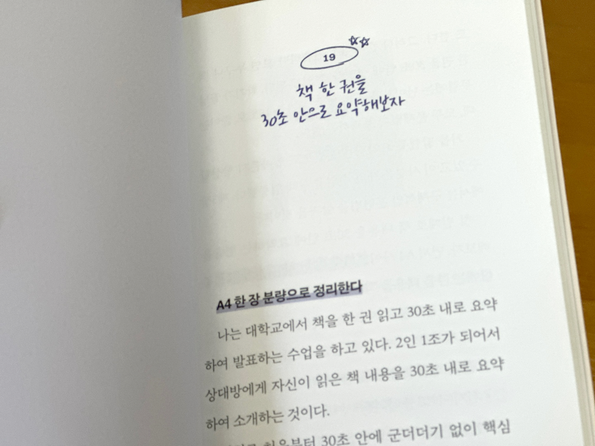

안녕하세요, 라보엠입니다.
오늘은 일본의 저명한 교육학자이자 자기계발 분야에서 꾸준히 사랑받는 작가, 사이토 다카시의 책 『요약이 힘이다』를 소개하고, 실제로 읽은 후기를 나눠보려 합니다. 이 책은 정보의 홍수 속에서 핵심만을 빠르고 정확하게 뽑아내는 ‘요약력’의 중요성과 실전 적용법을 다루고 있습니다. 평소 번역서를 잘 읽지 않는 분들도, 사이토 다카시의 이름을 보면 한 번쯤 손이 갈 만한 책이죠. 저 역시 그의 전작 『혼자 있는 시간의 힘』에서 큰 도움을 받았기 때문에 이 책에도 기대가 컸습니다.

책의 기본 구조와 핵심 메시지
요약이 힘이다는 총 3부로 구성되어 있습니다. 1부에서는 ‘한마디로 표현하는 습관’을 들이는 방법, 즉 복잡한 사물이나 상황을 한 문장으로 정의하는 훈련법을 소개합니다. 2부는 실제로 요약하는 법, 즉 불필요한 낭비를 줄이고 핵심만 남기는 ‘기초 요약력 트레이닝’에 집중합니다. 3부에서는 요약을 넘어, 자신의 생각과 재미를 더해 ‘나만의 메시지’로 발전시키는 방법까지 안내합니다.
사이토 다카시는 요약이란 단순히 줄거리를 나열하는 것이 아니며, ‘사실의 객관성’과 ‘핵심의 선별’이 필수라고 강조합니다. 특히 데카르트의 네 가지 규칙(사실 확인, 세분화, 우선순위, 검증)을 요약력 훈련의 중요한 원칙으로 제시하는데, 이 부분이 매우 인상적이었습니다.
실생활에서 요약력의 필요성
이 책은 요약이 단순히 공부나 직장 업무에만 필요한 기술이 아니라, 일상 대화, 자기소개, 민원 전달, 심지어 가족 간 소통에도 꼭 필요한 역량임을 강조합니다. 예를 들어, 엄마들끼리 등하원 시간에 나누는 짧은 대화, 남편이나 아이에게 전달하는 메시지, 회사에서 보고서를 쓸 때 등 요약력은 효율적이고 명확한 소통의 핵심입니다.
실제 적용법과 팁
- 그래프, 일러스트 활용: 정보를 시각적으로 정리하면 한눈에 전체를 파악할 수 있습니다.
- 한마디로 정의하기: 무언가를 설명할 때 먼저 한 문장으로 정의해보는 습관을 들입니다.
- 사실과 의견 구분: 요약에는 객관적 사실과 주관적 해석을 명확히 구분하는 훈련이 필요합니다.
- 실전 연습: 책 한 권을 30초 안에 요약해보는 연습, 회의 중 10분마다 내용을 정리해보는 연습 등이 소개됩니다.

책의 장점과 특징
- 콤팩트한 분량과 구성: 한 손에 들어오는 작은 사이즈로, 출퇴근길이나 짧은 시간에도 부담 없이 읽을 수 있습니다.
- 실용적 사례: 직장인의 보고서, 학생의 학습, 자기소개서, 유튜브 영화 요약 등 다양한 분야의 실제 사례가 풍부하게 실려 있습니다.
- 명확하고 간결한 문체: 사이토 다카시 특유의 군더더기 없는 문장과 실용적인 조언이 돋보입니다.
맺음말
이 책을 읽으면 요약력은 단순히 정보를 줄이는 기술이 아니라, 본질을 파악하고 자신의 생각을 명확하게 전달하는 힘이라는 점을 느낄 수 있습니다. 이 책을 읽으면 어떤 정보를 접하든 ‘이걸 한 문장으로 요약하면?’을 먼저 떠올리게 되며 정보의 홍수속에 살고 있는 이 시대에서 큰 도움이 되는 기술을 습득할 수 있습니다. 특히, 요약을 통해 상황 판단력이 좋아지고, 실생활에서 더 유연하게 대처할 수 있다는 점이 인상적이었습니다. 요약력은 곧 판단력이고, 실행력이며, 자기 삶을 주도적으로 살아가는 힘입니다. 사회인이라면 꼭 한 번 읽어볼 만한 필독서로 추천합니다.
“사이토 다카시의 『요약이 힘이다』는
정보의 홍수 시대에 꼭 필요한 ‘핵심 뽑아내기’의 기술을 쉽고 명확하게 안내하는 실용서이다.”
“요약의 기본은, 핵심을 남기고 그 외의 주변 요소는 과감히 ‘버리는 것’이다. 남겨둔 핵심 속에 어떤 형태로든 녹여, 버려지는 요소에도 가치를 부여하는 것, 이러한 요약이 가장 이상적인 요약이다.”
— 『요약이 힘이다』 중
요약이 힘이다 - 예스24
“지금, 왜 요약을 배워야 하는가?”*** 더 쉽고 더 빠르게 효율을 내는 상위 1퍼센트의 법칙 *** *** 일, 공부 등 인생의 단축키가 되어줄 38가지 요약 스킬 ***책, 영화, 드라마를 10분 안으로 설명해
www.yes24.com